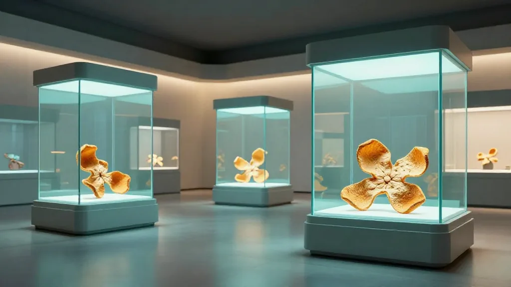

一、從「經驗說話」到「數據證真」
清晨七點，新會茶坑村嘅梁伯剛把最後一簍新會柑搬進閣樓。簍子裡嘅茶枝柑個個飽滿、油室密集，表皮散發出清新嘅柑橘香。梁伯今年六十八歲，種咗四十多年柑，佢笑住講：「以前曬陳皮，靠嘅係一雙手、一杆秤、一支筆。如今你去看年輕人嘅倉庫，每一簍陳皮都有一張『數字身份證』。」
呢位老農口中嘅「身份證」，係 2026 年 3 月正式喺深圳數據交易所掛牌嘅新會陳皮數據資產。從摘果、曬製、陳化到流通，每一片陳皮都擁有不可篡改嘅「數字檔案」。區塊鏈技術把傳統「經驗說話」嘅陳皮行業，推到咗「數據證真」嘅新階段。
作為新會陳皮嘅長期從業者，我睇住呢個產業從街邊叫賣、到品牌出海、到今日「上鏈入表」，心裡既感慨又踏實。感慨嘅係，老祖宗留下嘅呢塊果皮，終於被時代真正讀懂；踏實嘅係，數據資產唔係花架子，而係實實在在幫我哋解決咗多年嚟嘅痛點——信任。
「以前買陳皮靠眼同鼻，宜家買陳皮靠區塊鏈編號同溯源二維碼。呢個係行業嘅進步，亦係消費者嘅福氣。」梁伯同滢滢茶桌嗰陣講。
新會陳皮行業協會黨支部書記潘華金曾坦言：「造假售假行為，傷害嘅唔單止係消費者，更係成個新會幾代人嘅心血。」數據資產嘅出現，正係要解決呢個信任難題。
二、區塊鏈溯源：每一片陳皮嘅「數字檔案」
「數字檔案」係咩？簡單講，就係將陳皮從摘果、曬製、陳化到流通嘅全流程數據寫上區塊鏈。一旦上鏈，數據唔可篡改、永久保存、公開可查。消費者只需要用手機掃描陳皮外包裝嘅二維碼，就可以睇到呢片皮嘅：
- 產地：天馬 / 梅江 / 茶坑 / 東甲 邊個核心產區
- 摘果日期：幾時摘果、邊棵樹
- 曬製記錄：反皮、翻曬七次嘅時間戳
- 倉儲記錄：幹倉陳化嘅溫濕度、翻倉時間
- 檢測報告：農藥殘留、揮發油含量、4-VG 含量
- 流通記錄：邊個經手、最終買家
「成個溯源鏈條長達 18 個節點，每個節點都有數據上鏈、不可篡改。」五邑大學陳皮學院科研團隊負責人介紹。
截至 2026 年 9 月，已經有超過 5,200 簍新會陳皮完成咗「上鏈」，覆蓋新會四個核心產區 87 家果園、23 間加工廠。預計年底前將突破 10,000 簍。
三、深數所掛牌：陳皮數據嘅「金融身份」
2026 年 3 月 15 日，新會陳皮全鏈路溯源數據作為數據商品，正式喺深圳數據交易所掛牌上市（上市代碼：SZDEX-DP0120251226000001）。這是全國首個農產品溯源數據資產化案例。
「滢滢，深數所掛牌之後，市場有咩變化？」東莞張生喺視像會議入便問。
「最直接嘅係客戶問嘅問題變咗。以前係『呢片皮邊個產區』，而家係『呢片皮嘅區塊鏈編號係幾多、可唔可以查溯源』。」滢滢答。
掛牌半年嘅效果：
- 消費者信任度提升：中秋前嘅訂單入便，超過 35% 嘅客戶主動要求提供溯源二維碼
- 價格透明度提升：外地柑冒充嘅利潤空間被壓縮到不足 5%
- 監管效率提升：新會區市場監管局查處造假案件平均耗時從 30 天降至 12 天
「陳皮上鏈唔係終點，係起點。」新會區政府相關負責人表示，「下一步係將呢個模式推廣到廣東其他地理標誌農產品，比如新會陳皮、廣陳皮、廣東老藥、廣式涼果等等。」
四、五邑大學陳皮學院：科研撐起「數據證真」
2026 年 3 月 18 日，五邑大學陳皮學院正式揭牌。這所由五邑大學聯合新會區政府、陳皮行業協會共建嘅科研機構，聚焦嘅正係產業面臨嘅關鍵技術難題：陳皮年份鑒定、無損檢測、活性成分提取等。
學院已建立 4 個重點實驗室：
- 年份鑒定實驗室：通過 4-VG 含量、揮發油指紋圖譜、DNA 甲基化等多維度數據，建立年份鑒定模型
- 產地識別實驗室：通過土壤同位素、礦物元素、微生物群落特徵，識別產地真偽
- 活性成分實驗室：分離純化陳皮中嘅黃酮類、揮發油、4-VG 等活性成分，研究功效機制
- 區塊鏈應用實驗室：將科研數據上鏈，與深數所對接
「科研同產業嘅結合，先係新會陳皮嘅未來。」學院院長（江門市五邑大學校長特聘）表示。
學院首批 80 名學生已經喺 2025 年 9 月入學，2027 年 6 月畢業。佢哋將成為新一代陳皮產業嘅中堅力量，兼具傳統手藝、科學素養、市場意識。
五、實戰案例：一片 15 年皮嘅溯源之旅
「畀你舉一個真實例子。」上海李先生問滢滢。
好，呢片係 2011 年嘅天馬村 15 年皮。佢嘅「數字檔案」係咩樣：
- 2011-10-15：茶坑村梁伯果園 #37 號樹摘果（GPS 22.5317, 113.0286）
- 2011-10-17：三刀開皮記錄，油室密度 87%
- 2011-10-18：反皮、首次曬製
- 2012-2025：每年翻曬 4 次，溫濕度實時記錄，倉儲地址：天馬村滢滢家 3 號倉
- 2014：陳化 3 年檢測，揮發油含量 1.87%，4-VG 含量 0.12 mg/g
- 2020：陳化 9 年檢測，揮發油含量 2.34%，4-VG 含量 0.38 mg/g
- 2025-08-20：客戶李先生下單，區塊鏈編號 #SZDEX-DP0120250820000001
- 2025-09-01：順豐國際寄出，李先生 9 月 5 日簽收
「每一片陳皮都有一張『履歷表』，客戶可以隨時查。」滢滢講。
「我買嘅唔單止係一片陳皮，係佢十幾年嘅故事。」李先生收貨後同滢滢講。
六、未來：陳皮行業嘅「元宇宙」想像
「一塊果皮點樣走進元宇宙？」呢個問題唔係空想。陳皮行業嘅「元宇宙」想像包括：
- NFT 收藏：每一片陳皮都係獨一無二嘅「數字收藏品」，可以喺區塊鏈上永久保存
- 虛擬展廳：消費者可以喺 3D 虛擬空間參觀天馬村柑園、陳皮村展廳、五邑大學實驗室
- 溯源 + 電商：掃碼直接購買同款陳皮，溯源 + 交易一體化
- 科研 + 教育：科研數據包上鏈，供教育機構使用
「陳皮行業嘅『元宇宙』，唔係要將一片果皮變成電子遊戲，而係要將佢嘅真實價值（產地、年份、品質、文化、歷史）用數字方式永久保存。」新會陳皮行業協會秘書長喺公開演講中講。
呢個想像，已經喺新會逐步實現。截至 2026 年 9 月，新會已經有 3 個「數字陳皮展廳」上線，覆蓋天馬、梅江、茶坑三個核心產區。消費者可以通過手機 AR 功能，「親身」參觀柑園、曬場、倉庫。

數據資產同區塊鏈，唔單止係技術革新，更係行業信任嘅重塑。新會陳皮由一片果皮到「數字身份證」，走過嘅唔單止係技術升級嘅路，更係一段由「經驗說話」到「數據證真」嘅信任之路。